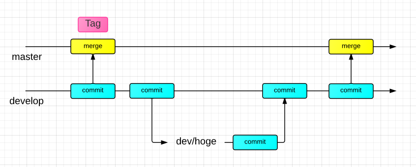

2014/06/02(Mon)
in IPL大会議室
DevIPL?
→ モチベ維持のための発表会
勝手ながら企画しましたが、多くの方に参加していただきありがとうございます。
Who am I?
Yuya Yano @ IPL
GitHub: @yymm
Bitbucket: @yymm

目標
作成中だったプロジェクトのリリース
- Yoichi - 弓道練習用アプリ
- MemoMemo - プライベートメモツール
Yoichi
Give a cloud for your Kyudo.
Demo
MemoMemo
MemoMemo is a advanced private memo tool.
Demo
目標 その２
- GitHub草原を広げる
2014/03
2014/04

勉強したこと
PythonでWebアプリを作る方針で開発を進めてきたので、
仕事だけでは勉強できないことを大量に勉強出来た。
Learn! - Python
- Python2
- Python3
- Flask - micro web framework
- Django (結局Flaskを使う)
- SQLAlchemy (DB toolkit)
- SQLite - for testing on localhost
- MySQL - for deploy and for testing on localhost
- Jinja2 (Template engine)
- Oauth (using rauth)
- Websocket
- PEP8
- py.test
Learn! - Web
- CSS
- Javascript
- jQuery
- Vue.js
- (Angular.js)
- Canvas
- Twitter Bootstrap → Boilerplate
- Fastclick
- Ajax
- CSS Tricks - here
- Slider pages (Yoichi)
Learn! - Service, CI
- GitHub
- Bitbucket
- Heroku ← staging server
- drone.io ← now using for auto testing and auto deploy
- Travis.CI
- Gehirn
- Digital Ocean
- sakura VPS
Learn! - Vim
Learn! - Dev
- Ubuntu
- Mac
- UNIX!
- Vim
- Git
- GitHub flow
- tmux
- Vagrant
- proxylocal
- ngrok
仕事では触れもしないようなことを
たくさん勉強した気がする
色々細かい開発のときに出くわした議題はありますが割愛
そんなこんなで出来るようになったこと
- Pythonがそこそこ書けるようになった
- SQLiteとMySQLを使える(ただし、SQLAlchemyを使ったので、SQL全然書けない...)
- Javascriptもそこそこ書けるようになった
- OAuthもなんとなくわかった
- Websocketが使えた
- Gitに慣れた
- VPS借りてデプロイ出来るようになった(nginx)
- ドメインも借りて使えるようになった
出来るようになってしまったこと
- LaptopにはLinuxを入れる
- UNIXベースな開発環境でないとストレスがたまっていくような気がする
- Vimがないと嫌
勉強になったこと
- 銀の弾丸なにそれ？
- 自分は一から作るのが好きみたい
- 初めてチャレンジすることに対してはエラー処理の漏れだらけなので注意必須
- 深く勉強しないでコード書いたり、急いでたり疲れてたりするといともたやすくやばいコードを書く
- フロントからサーバまでやると辛いが勉強になる
- git push → デプロイは便利
- pep8などの構文チェッカーはいい
今後やりたいこと
- Yoichi機能追加
- FacebookでOAuth
- MemoMemoからブログエクスポート(Tinkererめんどい)
- Python以外の言語 - Go? Ruby? Lisp? Scala?
- 素のJavascript, 素のCSSは卒業したい
- 勉強したことで仕事を便利したい(自動化等々)
ご清聴ありがとうございました
来年もやるかもです...!
残りのスライドは...
細かい色々を紹介
主にPython
Flask
実はエイプリルフールネタに作ったbottleを参考にしたWebフレームワーク
Flask?
Flaskは日本語の情報が少ないとか言われてるけど、どうやって勉強するのがいいのか？
mitsuhiko?

Flaskの作者の@mitsuhikoことArmin Ronacherさん
この方はGitHub上にたくさんのサンプルコードを残している
@mitsuhikoパターン = Flaskベストプラクティス
Structure of directory - root
アプリはモジュール化、ルートにはrun.pyとrequirements.txtなどの設定ファイル
/[projectname]
requirements.txt
config.py
run.py
test_[projectname].py
README.md
Procfile
LICENSE.txt
Structure of directory - proj
モジュール内部の構成
/static
/css
/js
/img
/font
/template
__init__.py
database.py
utils.py
view.py
module.py
(/view)
viewが多層の場合はディレクトリにする
module.pyは使用するモジュール(oauth.pyなど)のこと
FlaskでのViewの分離
viewを分けるにはblueprintを使用する
__init__.py
from yoichi import view
app.register_blueprint(view.mod)
view.py or view/__init__.py
from flask import Blueprint
mod = Blueprint('view', __name__)
Flaskでもいい感じの構成ができる
参考にしたのはflask-website
Flaskの公式ページはFlaskで書かれていたという...
Tips: configはPythonファイルにする
Pythonで書くとosモジュールなどが使えて便利
# config.py
import os
# ここに書く
del os
# [projectname]/__init__.py
app,config.from_object('config')
Tips: デコレータを使う
PEP 318 -- Decorators for Functions and Methods
ログインしているかのチェックをデコレータに任せるといい感じ。
def requires_login(f):
@wraps(f)
def decorated_function(*args, **kwargs):
if g.user is None:
flash('You need to be signed in.')
return redirect('view.index')
return f(*args, **kwargs)
return decorated_function
mod.route('/upload', methods=['POST'])
@requires_login
def upload():
'''code'''
Flask Extensionを活用する
- Flask-SQLAlchemy
- Flask-Rauth
- (Flask-Sockets)
- Flask-SocketIO
他にもログイン系のExtentionやAdminなど色々な拡張があって便利。 @mitsuhikoさんに習ってexampleをつけているパターンが多いので使いやすい
Pythonのテスト, CI
py.test + drone.io
py.test
pep8, coverageのextensionがあって便利
$ pip install pytest pytest-pep8 pytest-coverage
$ py.test --cov --pep8 [projectname]
drone.ioからherokuにデプロイ
pushしてテストが通ってたら本番環境と同じHeroku環境にデプロイ
Branching
masterとdevelopがいつもあるブランチ。developからトピックブランチを切ってマージ(GitHub-flowなときはPR→GitHub上でマージ)
できたこととか今後とか
- Pythonは書きやすいし、きれいに書けるし、PEP8のチェックもすれば見やすいコードが素直に書ける
- Flaskのおかげで他人の書いたコードを読み込むことができた。
- CIにはtravis.ciもあるし、最近はCircle.ioとかもあるので使ってみたい。
- RubyにはCodeCliminateとかあって浦山。